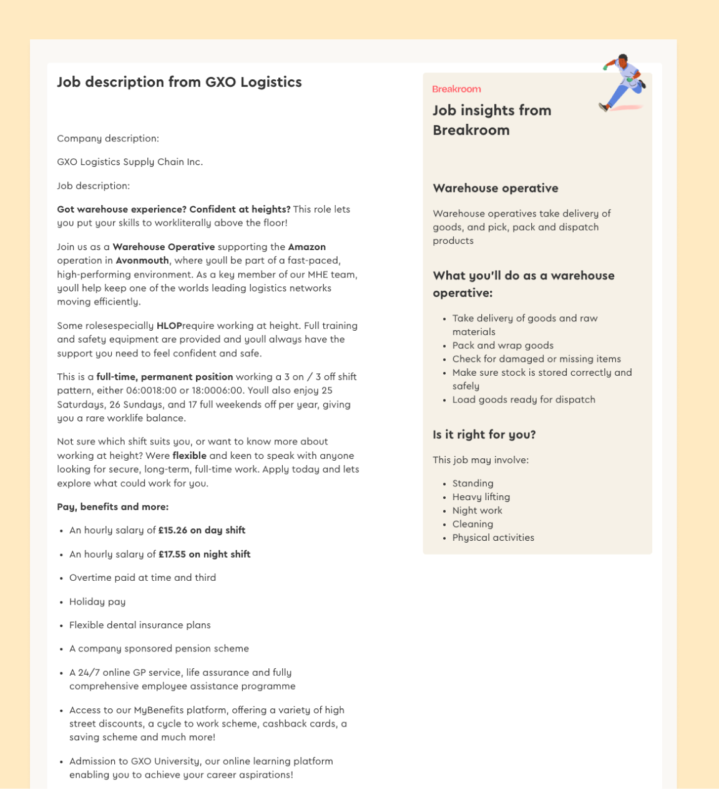
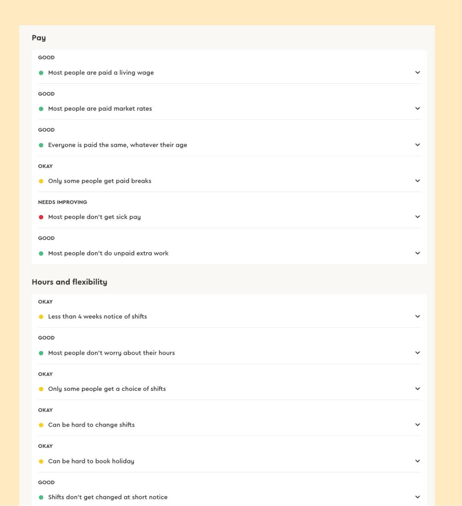
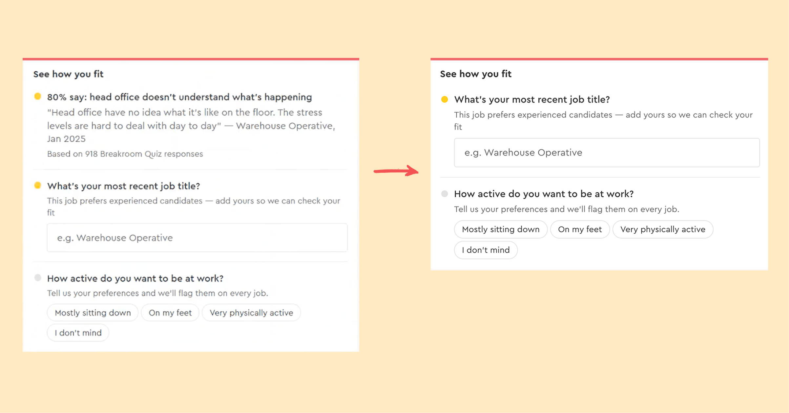
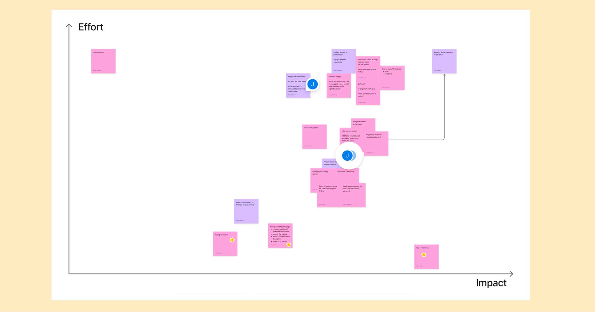

The prototype was built collaboratively with my design manager, both of us pushing changes to a shared repo using Claude Code. I then took ownership of the research, designing and running the studies end to end. Our first foray into building fast prototypes with AI!
The challenge
Breakroom is a job platform for frontline workers, across retail, hospitality, logistics, care and more. These people are often time-poor and need help finding a job that not only pays well but respects them. We hypothesised that these users were arriving at a job listing from Google and having to wade through too much information to decide whether to apply. We prototyped a new experience designed to fix two things: helping workers feel confident making that decision, and making it quicker to find a better alternative when a job isn't right.
The issues with the current site
Information overload. There's a long job description that nobody likes to read but probably contains some important nuggets of information to decide whether to apply. And every Breakroom finding is given the same relevance and weighting, meaning there's too many accordions to open and you don't know where to start. The cognitive overload is too much.


An example of how we were showing too much without an obvious direction of where to find what you need to decide whether to apply
The plan
We generated a three-study research plan. The studies used both qualitative sessions to see real behaviour, and a quantitative comparison to get statistically defensible numbers, with a final qualitative round after making changes to the prototype to confirm our findings and build a case for moving forward with the build.
| Study | What it is | Tool | Participants |
|---|---|---|---|
| A: Explore | Unmoderated video sessions — how people actually use the prototype | UserBrain | 6–8 people |
| B: Compare | Quantitative comparison: prototype vs breakroom.cc vs Indeed | Maze | 90 people (30 per condition) |
| C: Validate | Second video round to confirm findings and capture highlight clips | UserBrain | 8–10 people |
Success criteria
In every condition we asked a series of SUS usability score questions to be scored 0–100, and decided that a good result would be the prototype scoring above 68. An exceptional result would be above 80. We also wanted to see the task durations in the Maze test to measure whether the time to find an alternative role was measurably faster in the prototype. Exceptional would be 30% faster than on Breakroom or Indeed.
Phase A, and the work planned from early insights
Across six test sessions, the response to the product was consistently enthusiastic. Testers repeatedly described it as unlike anything they had encountered on existing job sites, with the Breakroom Take, pay comparison, and employee-first framing drawing the strongest reactions.
"this [pay comparison] part is so immensely helpful. [commute time] is helpful too because I can easily check 'okay it takes too long to get there I don't want this job', and I like that you can set your priorities, I love it."
— Eleonora
"I think the Breakroom Take is just such a good feature, and that's just the type of insight that you really need before you apply for a job, to me that's the gold in it all."
— Joanne
However, the dominant usability challenge was still cognitive load: four testers independently flagged the vacancy page was dense or overwhelming on first encounter, with feedback pointing to the need for clearer information hierarchy and more breathing room between sections. A related pattern emerged around some of the personalisation features, with users being unsure of the effect that adding their personalisation would have on the jobs they were seeing.
I time-boxed half a day to update the prototype to reflect some of these concerns, ready for Phase B.

An example of some very quick changes I made to a component in an effort to reduce cognitive load. It's still not perfect, but this was about making some quick and scrappy decisions
With the successful feedback from Phase A, we wanted to keep fast momentum. I worked with our Staff Software Engineer and Product Manager to break the prototype apart into components and together we mapped those out on an impact/effort chart. We identified that the pay insights feature was by far the highest impact and lowest effort component, so that was fast tracked to be the first thing we could build. We could also add it to vacancy pages as is, so it didn't rely on the new vacancy layout, which meant it was a quick win. We also worked out what features were actually likely to be larger projects that potentially required more engineering or design thinking.

Our Figjam to determine the most impactful feature we could build quickly
Where it stopped
Study A launched and ran successfully. I completed the setup for Study B in Maze, setting up the task flows for each condition and was in the process of using User Interviews to create a pool of participants when the project was cancelled.
Why share a case study for a project that was cut short?
Because the paths of quick agile teams don't always run smooth, and working in environments where projects get cut or reprioritised is something I've learned to be resilient for. I'm still extremely proud of the design work that went into this project and the partial completion still produced really useful insights.
What I'd do differently
If I ran this project again, and if I had a larger team to assist, then I'd push to launch Study B in parallel with Study A from day one rather than sequentially. We'd learn more, faster, and have both qualitative and quantitative results come in at the same time. I'd also consider running Phase B with a smaller pool to begin with, getting quick insights that might help to prove the concept and bring stakeholders on board faster.